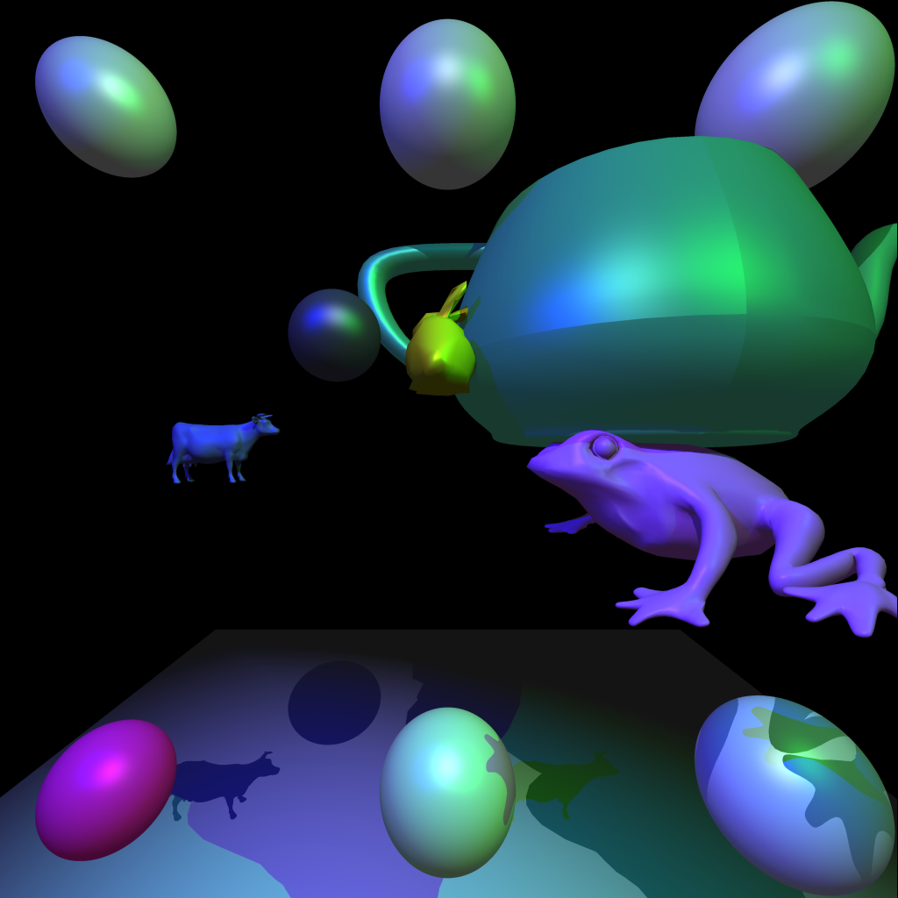
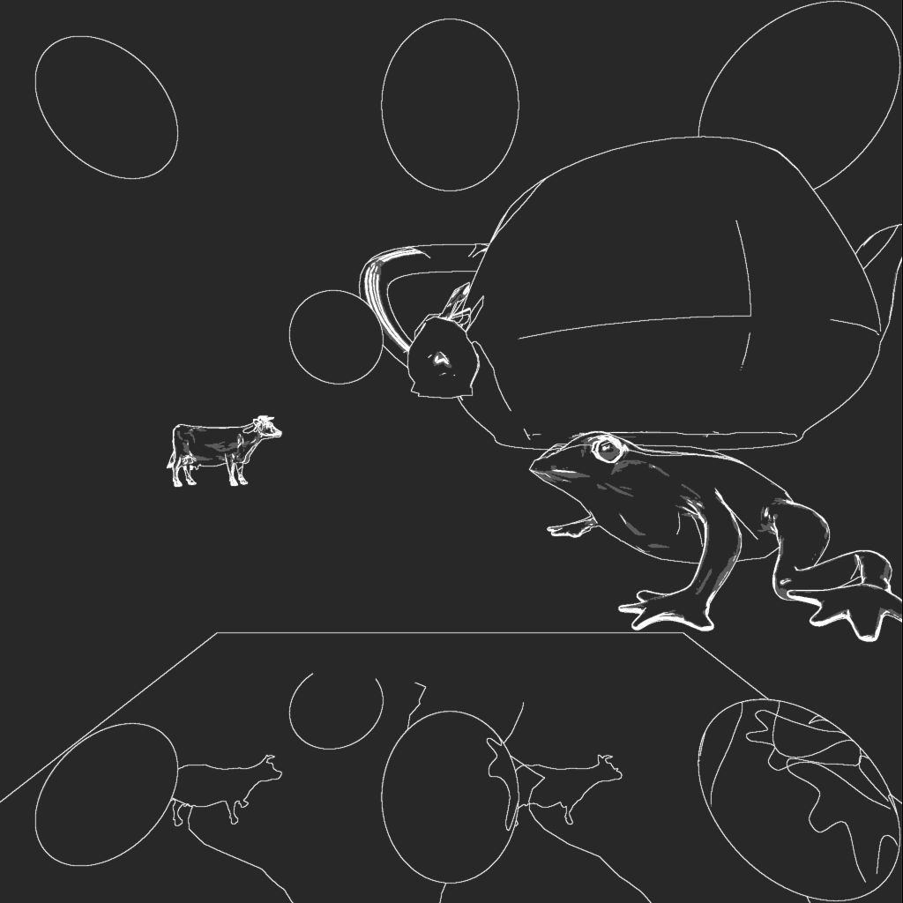
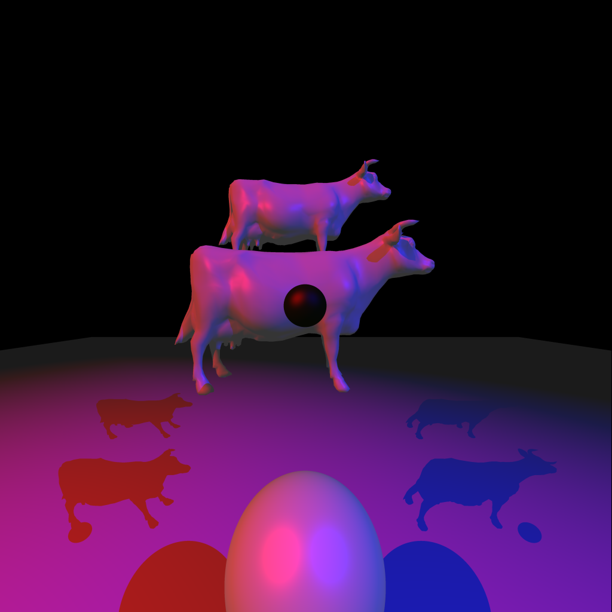
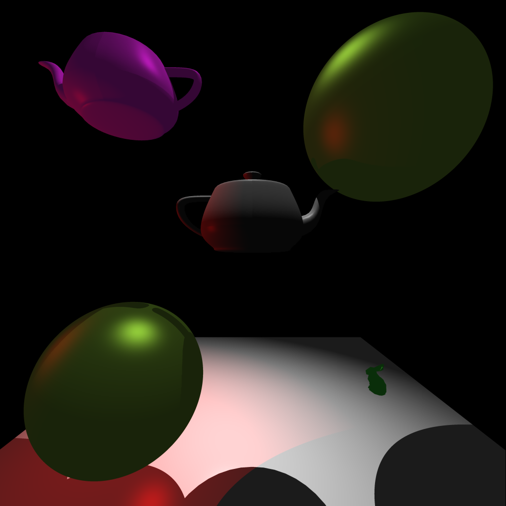
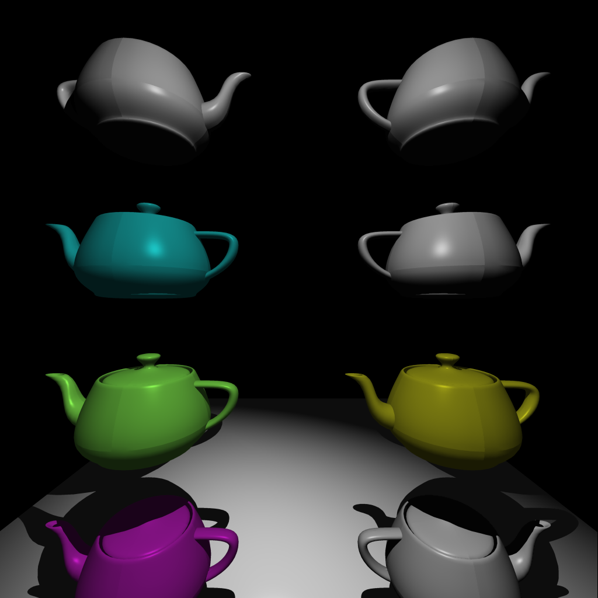

You can see a lot of the shadow outlines nicely in this, hence its inclusion
Input file: first_input.txt
This image satisfies the specifications from the instructions.
It took 14.286 seconds to generate this image.

Input file: second_input.txt
It took 4.650 seconds to generate this image.

Input file: third_input.txt
It took 4.424 seconds to generate this image.

Input file: fourth_input.txt
It took 10.198 seconds to generate this image.